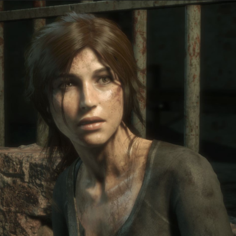

Gabriel Knight

- Emilie Knight
- DOB: 26 April, 1971
- Abilities: Schattenjager, Premonitions, Possible Immortality
- Friends: Stephan Klingmann, Xavier
- Family: Gabriel Knight (Brother)
- SO: Friedrich von Glower
Summary
- Childhood
- Emilie grows up as a solitary child. She never forms any lasting friends from school, detests her older brother (Gabriel), and always distant from her grandmother. Begins correspondence with Wolfgang early on, finds clock and letters in the attic while young. Doesn't tell anyone about what she finds. Grows up with constant nightmares about her Schattenjager duties. During high school, she excels academically and holds multiple jobs to support herself through college because Gabriel spent her original college fund on his bookstore.
- New York
- Attends a private college in New York. During her first semester, she meets Friedrich von Glower and forms a close bond with him through the semester. Over the Thanksgiving break Friedrich, Emilie, and Wolfgang (shows up on campus) go to Sleepy Hollow to disrupt a witch ritual. Afterward, she agrees to travel to Germany once the semester ends with Friedrich to begin her Schattenjager training. Although not thrilled about Friedrich joining her, Wolfgang agrees and returns to Germany.
- Germany
- TBD
- Sins of the Father
- Emilie accompanies Wolfgang to Benin where the pair runs into Gabriel. After Wolfgang's death and Gabriel reclaims the Schattenjager amulet she travels back to New Orleans to defeat Tetelo. She stays with Gabriel as they rescue Grace and stop the voodoo ritual. She immediately boards a plane back to Germany, not wanting to spend any more time than she needs to with Gabriel. Although, she does stop by to visit Grams for a few moments.
- The Beast Within
- Even with the restoration of Schloss Ritter Emilie stays in Munich with Friedrich. She is still wary of Gabriel because she doesn't believe he will take his role as a Schattenjager seriously and she doesn't know how accepting he will be of the supernatural. This begins many arguments between the siblings.
Gabriel enlists her help when the pair run into each other at the hunting club on his first night. - Blood of the Sacred, Blood of the Damned
- TBD
- After Games
- TBD